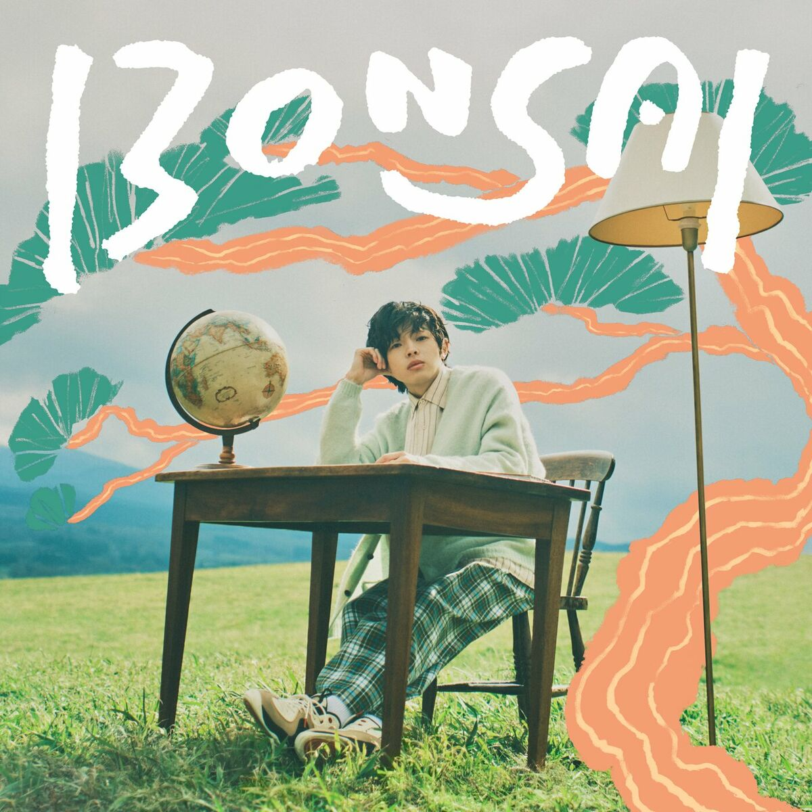
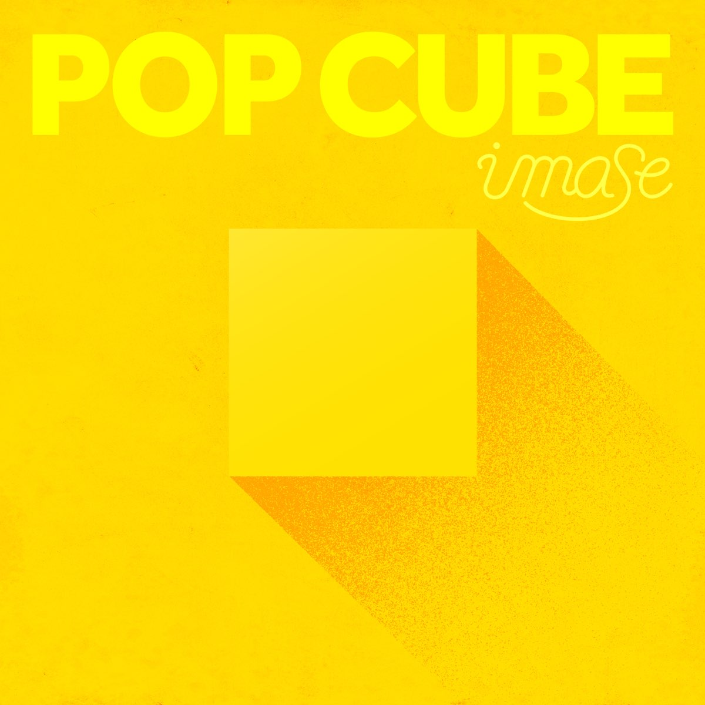

0:00
3:23
IMASE
Um artista masculino de 23 anos, de Gifu, viralizou suas músicas no TikTok e estreou em 2021. Sua canção "NIGHT DANCER" entrou no TOP 20 da plataforma sul-coreana "Melon" e foi destaque em 31 países no Spotify. Ele ganhou o prêmio de Melhor Obra no "65º Grande Prêmio da Música do Japão" e foi o primeiro artista japonês a se apresentar e ser premiado nos eventos MMA 2023 e CCMA 2023, expandindo sua carreira internacionalmente.
Imase
ÁLBUNS

BONSAI
O BONSAI, lançado em 15 de maio de 2024, é o primeiro álbum de estúdio do artista japonês imase. Com 19 faixas, o álbum explora uma fusão de J-Pop e influências contemporâneas, refletindo a evolução do artista desde seu debut em 2021. A música "LIT", que promoveu uma campanha publicitária da GU, é uma das faixas destacadas. O álbum também inclui "NIGHT DANCER", um sucesso anterior, mostrando a versatilidade e o potencial de imase na cena musical.
